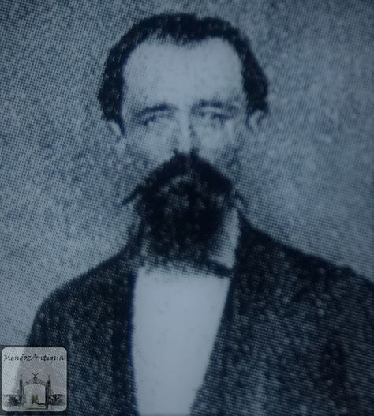
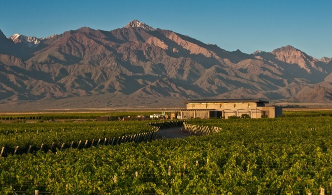

Malbec grapes were brought from France by Michel Pouget in 1853.
Explore Wine Route in Mendoza

Tour world-famous wineries (bodegas) specialized in Malbec at the foot of the snow-capped Andes.
Mendoza’s Wine Route is all about 'Terroir.' The Malbec grape loves the thermal amplitude here (hot days, cold nights), which stresses the vine just enough to produce thick skins and deep tannins.
Malbec is high in Anthocyanins (antioxidants). In France, it’s a "blending" grape, but the intense Argentine sun makes the skin so thick that it became a "Superstar" solo grape.
The trend has moved from "Oak-heavy/Vanilla" wines to "Terroir" wines that taste like the actual stones and soil of the vineyard.
The Three Main Regions
Maipú (The Historic Route): Closest to the city and the most traditional. It’s flat, making it the most popular spot for bike tours. It’s home to historic "giants" like Trapiche and La Rural (which has a great wine museum).
Luján de Cuyo (The Land of Malbec): Known as the "Cradle of Malbec." This region has a mix of classic family estates and high-end boutique wineries. It’s about 20–30 minutes from the city and offers stunning views of the Andes.
Uco Valley (The Modern Frontier): The furthest away (1.5 hours) and the highest in altitude. This is where you’ll find the most "architectural masterpiece" wineries and "terroir-driven" wines. It is considered the most prestigious region today.
Essential "Must-Knows"
Reservations are Mandatory: Unlike Napa or parts of Europe, you cannot just "walk in" for a tasting. Most wineries (bodegas) require booking at least 48 hours in advance—and months in advance for famous spots like Catena Zapata or Casa Vigil.
The "Siesta" is Real: Many wineries and local businesses close between 1:00 PM and 4:00 PM. Plan your day around a long "Winery Lunch"—these are world-class, multi-course meals paired with wine that often last 2–3 hours.
Logistics Matter: Do not try to visit more than one region in a single day. The distances are deceptive, and the roads between Luján and Uco Valley can take significant time.
Don't Drive Yourself: Argentina has a zero-tolerance policy for drinking and driving. Use a private driver (remis), a specialized tour bus (like the Bus Vitivinícola), or an Uber/Taxi (available in Maipú/Luján but rare in Uco Valley).
Best Time to Visit
Harvest (February – April): The most exciting time. The Fiesta de la Vendimia (Harvest Festival) in early March is a massive national celebration.
Spring (September – November): The vines are turning green, and the weather is mild and perfect for outdoor lunches.
What to Expect
The trend has moved from "Oak-heavy/Vanilla" wines to "Terroir" wines that taste like the actual stones and soil of the vineyard.